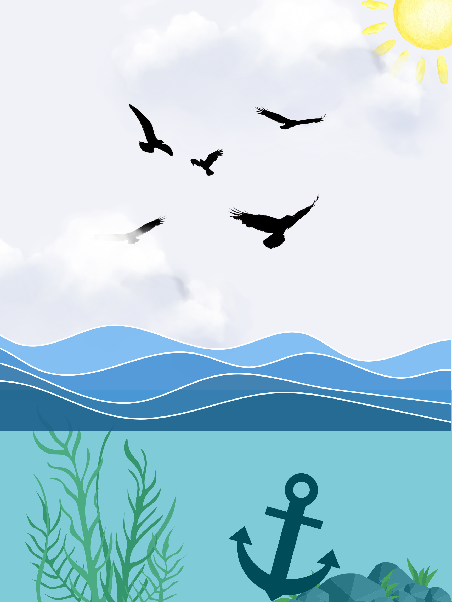

Poster

This poster is a representation of how women are, most of the time, held back by society and men are uplifted. The flock of birds are men, staying close to one another, making sure they all fly to greatness. Society is represented by the unrelenting waves of the ocean, keeping things below the sea level, holding them back. Women are the anchor, thrown off the boat and sunk down to the deepest parts of the ocean floor. This is a symbol of how women are consistently held back from their full potential, just because of a prejudice.